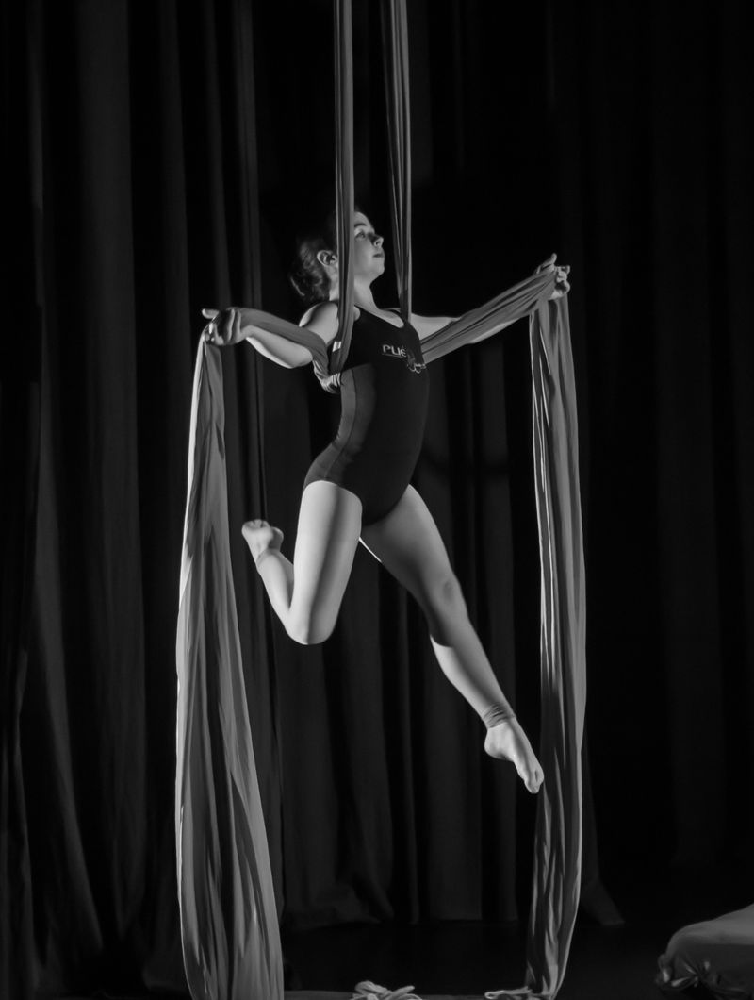
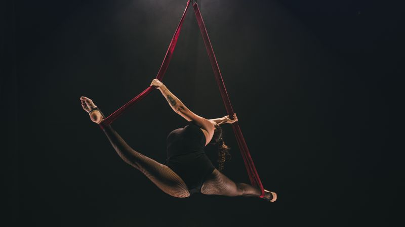
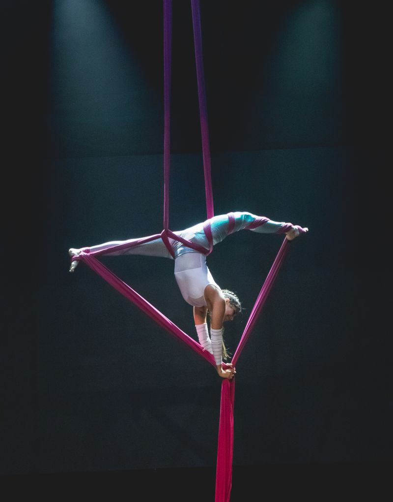
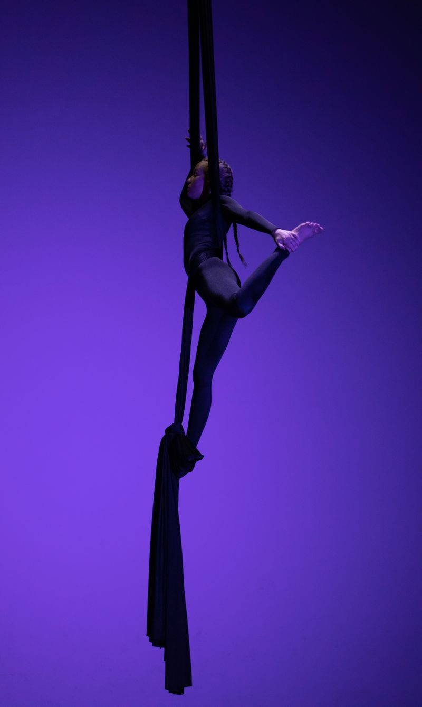

Programme · About
About the studio.
An aerial silks and circus arts studio, built on strength and expression in equal measure.

II The studio story
Where it began.
Aerial work asks for two things at once: the strength to hold yourself in the air, and the expression to make it mean something.
How and why the studio started, in its own words.
Studio story — to be supplied
- Founded
- TBC
- Founders
- TBC
- Location
- TBC
III Our approach
Tension & release.

Strength you can trust.
Expression you can own.
Proposed copy

IV In the studio
Practice & safety.
How classes run and how the rig is looked after. Every detail below is awaiting confirmation from the studio.
How we practise
- Everyone starts on the floorProposed
- Progress at your own paceProposed
- Spot, support, encourageProposed
- Performing is optionalProposed
Technical & safety
- Rig height
- TBC
- Rigging inspections
- TBC
- Crash mats
- TBC
- Instructor ratio
- TBC
- Qualifications
- TBC
- Insurance
- TBC
- First aid
- TBC
- Waiver & health form
- TBC
Your name could be in the next programme.